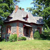

Now Playing:
Index #001 - Perreault, Adrian, 11 June 2001
|  |
Kieran Gatehouse
Built in 1865 |
Listed on the state and national Registers of Historic Places, the Kieran Gatehouse dates to 1865 and was a gatehouse on the estate purchased by the Marist Brothers in 1908. This quaint cottage has remained in constant use, first as a headquarters for the Poughkeepsie Province of the Marist Brothers and then as office space and a private residence. Brother Paul Ambrose Fontaine used the Gatehouse as his office during his tenure as President of the College. The Gatehouse was renamed the Kieran Gatehouse in October 1990 when it was dedicated to the late Brother Kieran Thomas Brennan. Not only was Brother Brennan a long-time trustee of Marist College, but he was also the director of student Brothers from 1954 to 1964.